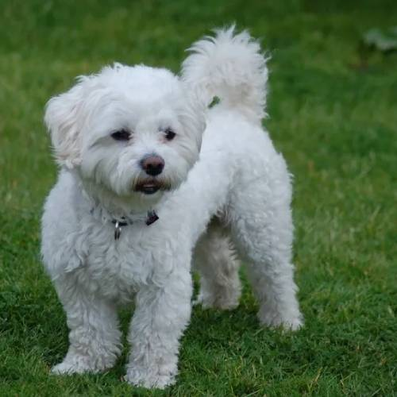
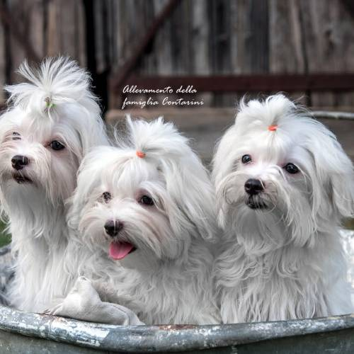

Il Maltese è un cane di piccola taglia, noto per il suo aspetto elegante e il pelo lungo, bianco e setoso. Ha un carattere vivace, affettuoso e molto socievole, ed è spesso considerato un eccellente cane da compagnia. Nonostante le dimensioni ridotte, è coraggioso e intelligente, ama stare vicino ai suoi padroni e si adatta bene alla vita in appartamento. Il Maltese richiede cure regolari per mantenere il suo mantello in perfette condizioni.
Il Maltese maschio è un cane di piccola taglia, generalmente pesa tra i 3 e i 4 kg e misura circa 20-25 cm di altezza al garrese. Ha un corpo compatto e proporzionato, con un pelo lungo, setoso e bianco puro che richiede una cura costante. È vivace, affettuoso e molto legato alla famiglia, ma può mostrare anche un carattere coraggioso e determinato nonostante le sue dimensioni ridotte. Ama la compagnia e si adatta bene alla vita domestica, essendo un ottimo cane da compagnia.
La femmina di Maltese è simile al maschio per aspetto, ma generalmente un po’ più piccola e leggera, con un peso che varia dai 2,5 ai 3,5 kg e un’altezza di circa 20-23 cm al garrese. Ha lo stesso mantello lungo, bianco e setoso che richiede cure regolari. È dolce, affettuosa e molto attaccata alla famiglia, spesso un po’ più tranquilla rispetto al maschio, ma comunque vivace e intelligente. Anche lei si adatta perfettamente alla vita in casa ed è un’ottima compagna.